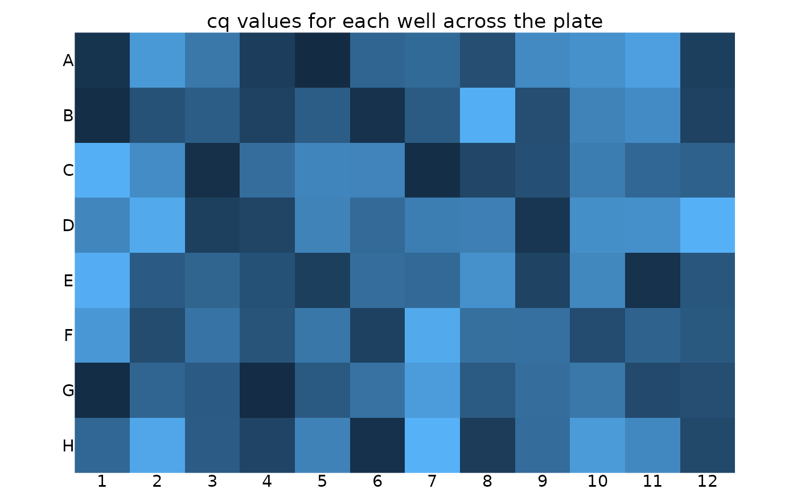
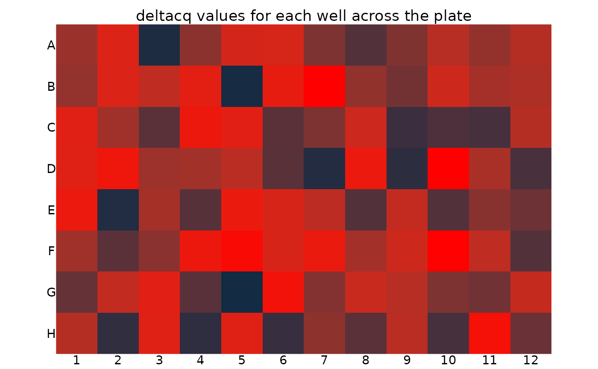

Plots the plate with each well coloured by its value. Example values are Cq, Delta Cq or Delta Delta Cq.
Details
For a specific example see the calibration vignette:
vignette("calibration_vignette", package = "tidyqpcr")
See also
Other plate creation functions:
create_blank_plate(),
create_colkey_4diln_2ctrl_in_24(),
create_colkey_6_in_24(),
create_colkey_6diln_2ctrl_in_24(),
create_rowkey_4_in_16(),
create_rowkey_8_in_16_plain(),
display_plate_qpcr(),
display_plate(),
label_plate_rowcol(),
make_row_names_echo1536(),
make_row_names_lc1536()
Examples
library(dplyr)
#>
#> Attaching package: ‘dplyr’
#> The following objects are masked from ‘package:stats’:
#>
#> filter, lag
#> The following objects are masked from ‘package:base’:
#>
#> intersect, setdiff, setequal, union
library(ggplot2)
# create 96 well plate with random values
plate_randomcq <- create_blank_plate_96well() %>%
mutate(cq = runif(96) * 10,
deltacq = runif(96) * 2)
# display well Cq value across plate
display_plate_value(plate_randomcq)

# display well Delta Cq value across plate with red colour pallette
display_plate_value(plate_randomcq, value = "deltacq") + # uses ggplot syntax
scale_fill_gradient(high = "#FF0000")
